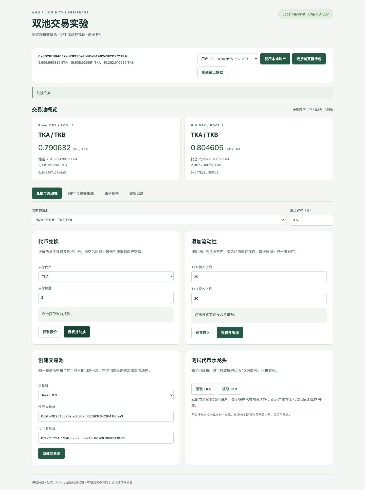
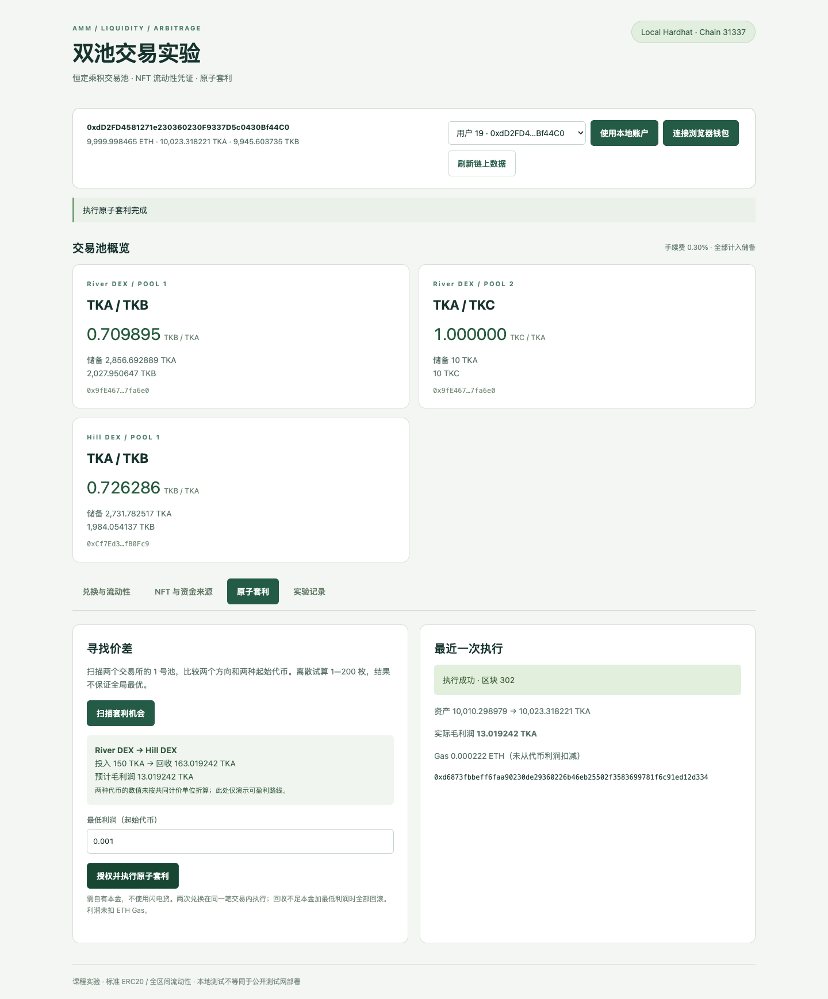

本实验实现两个基于恒定乘积机制的去中心化交易所。用户可以领取测试代币、创建交易池、兑换代币、提供流动性，并通过 ERC721 NFT 持有和转让流动性份额。套利者利用两池价差，在单笔交易内完成买入和卖出。
合约及网页已在本地 Hardhat 链实际部署和运行，Chain ID 为 31337。除两种主测试代币 TKA、TKB 外，浏览器测试额外部署 TKC，用于验证前端创建新池与首笔注资。公开测试网部署脚本为可选功能，本次没有进行公开部署。
| 组件 | 实现内容 |
|---|---|
| TestToken | ERC20；每个地址每小时可领取每种代币10,000枚 |
| MiniDEX × 2 | 多个交易池、恒定乘积兑换、0.30%手续费、ERC721流动性凭证 |
| AtomicArbitrage | 自有本金、两腿兑换、最低利润约束、失败回滚 |
| 网页 | 账户切换、授权、兑换、注资、NFT赎回与转让、资金来源、套利、历史记录 |
| 验证 | 14项合约测试、10项浏览器检查、7组最终链上核查 |
合约使用 Solidity 0.8.20 和 OpenZeppelin 5.4.0，开发环境为 Hardhat 3、Node.js 24。网页使用 Vite 与 ethers 6，通过本地测试账户或浏览器钱包签名。报价来自合约调用，余额和储备来自链上读取。
项目参考课程仓库的工程结构，补全业务合约；代码与文档由 AI 辅助实现，运行结果、交易收据和截图均来自实际执行。用户要求不录制视频，因此交付代码、文档与截图。
设输入储备为 x、输出储备为 y、输入量为 Δx，手续费率为0.003。合约计算：
全部输入进入储备，手续费留在池中，由流动性份额持有人共同享有。网页显示的储备比为边际价格；大额兑换另受价格冲击影响。最低到账与交易截止时间限制执行条件。
首笔流动性总份额为 floor(sqrt(A × B))，其中1,000个最小份额单位永久锁定。后续投入按池内比例调整，多余代币留在钱包。每次成功添加生成一张NFT，记录池号、份额、首次投入、时间及原始提供者。
凭证转让后，新持有人获得赎回权；赎回时销毁NFT。可赎回资产包含手续费，也受价格变化与无常损失影响，不能将其与首次投入的差额直接等同于手续费利润。
套利合约从调用者取得起始代币，在第一池兑换中间代币，再在第二池换回起始代币。第二次兑换要求回收不少于本金加最低利润；任何一步失败均使整笔交易回滚。调用者最后收回本金与利润。
链下程序扫描两种起始代币、两个方向及离散投入金额。扫描不保证全局最优，两种代币利润未使用外部汇率统一估值。收益为代币毛利润，未扣ETH Gas。失败交易的状态回滚，但仍会消耗Gas。
支持标准、非 rebasing ERC20，不包含原生ETH路由、集中流动性或闪电贷。采用重入锁、SafeERC20、余额增量校验、份额下限和持有人校验。本项目用于课程实验，未经过独立安全审计。
采用固定随机种子20261031和20个地址。先确保每个用户执行兑换与添加操作，再进行100步随机操作。每步推进本地链时间30秒，共推进3,000秒，记录跨度3174秒。这是模拟链上时间，并非实际持续等待或并发压力测试。
| 指标 | 实测结果 |
|---|---|
| 独立账户 | 20 |
| 普通兑换 / 添加 / 撤回 | 74 / 55 / 21 |
| 模拟成功交易（包含领取与授权） | 271 |
| 额外制造价差 | Hill DEX，350 TKA换TKB，已单独记录 |
| 套利路线 | River DEX → Hill DEX |
| 投入 / 回收 | 100.0 / 105.725636361839480863 TKA |
| 代币毛利润 | 5.725636361839480863 TKA |
| 单笔收据中的Swap事件 | 2 |
额外制造价差的交易和套利两腿不包含在普通兑换次数中。没有将价差形成描述为完全随机。离散交易量可能越过两池同价点，本次价差缩小，但未完全消失。
| 池 | 套利前 B/A | 套利后 B/A | A储备（前→后） |
|---|---|---|---|
| River DEX | 0.853671 | 0.791800 | 2604.692889 → 2704.692889 |
| Hill DEX | 0.742750 | 0.804605 | 2700.527396 → 2594.801759 |
套利交易：
0xb9712b4e7e32a65df2a4138a3a850a7981c51f05193c25c26ab463d92e558026故意要求过高利润的交易状态为0，收据无存活日志。两池储备和用户起始代币余额与执行前相同，证明第一腿也随第二腿失败一起回滚。
0xe9cbcb9fdefbaaf749679c65640a9c2168a163018e2287a48f46acf32549b99a最终查询300笔成功收据和1笔失败套利收据。所有池的代币余额等于储备合计，活跃NFT份额加锁定份额等于总份额；链上运行时代码与编译产物一致。
浏览器直接调用本地部署合约，显示钱包余额、储备、兑换及注资入口。完整原图位于 docs/screenshots/01-trade.png。

浏览器测试发生在主模拟之后，额外操作改变池状态。因此下图的即时套利利润与第四节历史结果不同。完整原图位于 docs/screenshots/04-arbitrage.png。

cd amm-dex npm run setup # 终端一，保持节点运行 npm run node # 终端二 npm run deploy npm run simulate npm run dev
访问 http://127.0.0.1:5173，选择本地账户后操作。默认交易池已有初始流动性。节点重启会丢失状态，须重新部署；从空白节点开始才能复现本实验初态。
npm test # 完成部署、模拟并保持网页启动后 cd web && npx playwright install chromium cd .. npm run test:e2e npm run verify
14项合约测试通过，10项浏览器流程通过，7组最终链上核查通过。浏览器测试会发出真实本地交易、创建额外TKC代币和A/C池，并推进链时间测试水龙头。图像记录包含桌面与390px移动端。
README.md包含完整功能分析、公式、逐步运行说明及截图；contracts/为合约、脚本和测试；web/为网页；evidence/为真实部署、模拟、浏览器及核查记录；docs/screenshots/为6张原始截图。没有录制视频，未发送邮件，姓名学号留待填写。公开仓库：github.com/spursergmk/amm-dex-coursework。
课程框架：github.com/LBruyne/ZJU-blockchain-course-2026
参考提交：6f90ad4f6b89d00ff00943743addc903418a62c5
Uniswap V2白皮书：app.uniswap.org/whitepaper.pdf
OpenZeppelin Contracts 5.x：docs.openzeppelin.com/contracts/5.x/
Hardhat 3：hardhat.org/docs
ethers v6：docs.ethers.org/v6/